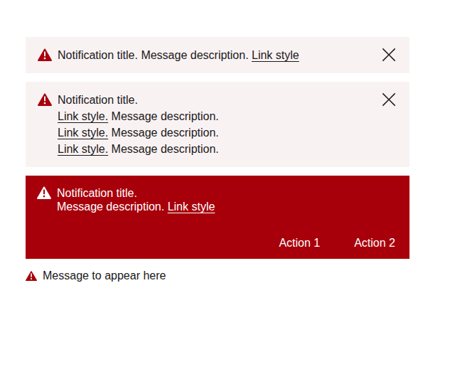
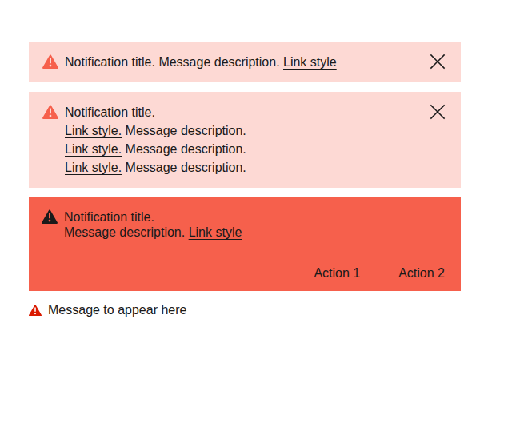
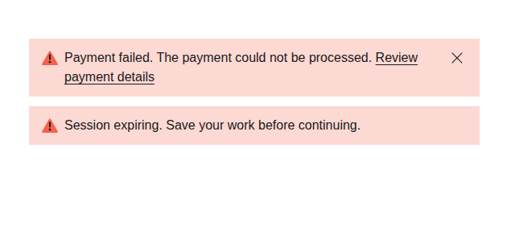
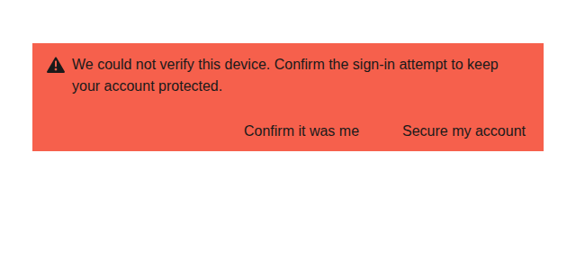
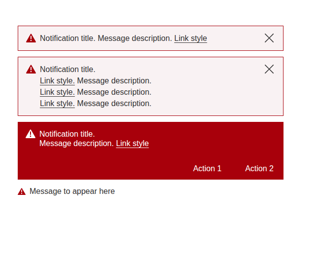
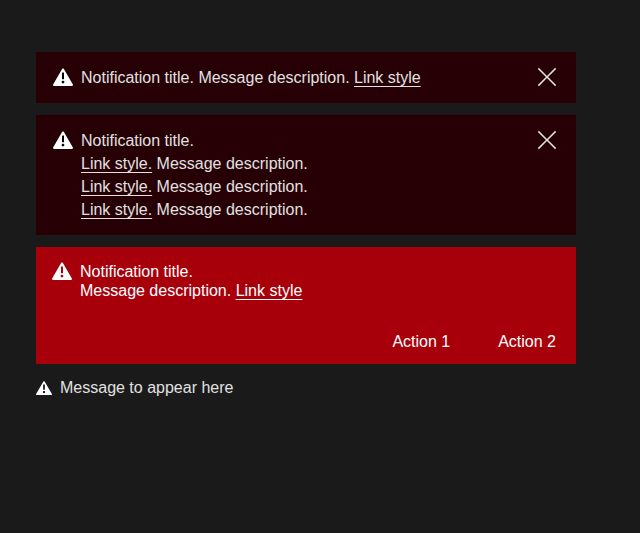
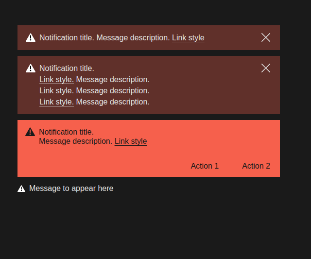
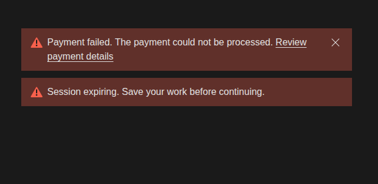
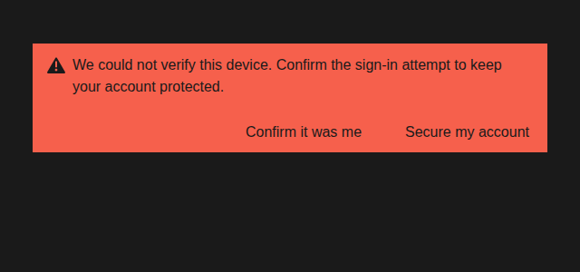

Apollo · review page · session 313
Why Mono's message box paints #A8000B, what it looks like folded into Mono's reds, and the three ways it can go. One call, and it is yours: no recommendation on this page.
The answer first
There was a reason, and it is on record. On 20 July the message box (the Notifications part) was kept as Legacy's reference only, with no Mono message box yet, and the same day you ruled that Legacy's reds belong to Legacy. Two days later Mono's own message parts were briefed and built in Mono's colours: Alert, Toast and Banner. The plan was to tag Notifications to Legacy later. That never happened, so it still ships in every theme, and in Mono it paints Legacy's whole palette, not only the red.
1 of 3 · why there is a third red
So the third red is not a typo. It is Legacy's red inside a part that was kept on purpose as Legacy's reference, whose move to Legacy was planned and never built. The waiver kept the checks quiet, and the showroom and canon show every part in every theme, so Mono has been drawing Legacy's message box ever since. It is not only the red: the amber (#FFBB33), the navy (#305A85) and the three tints in the same box are Legacy's too.
2 of 3 · the three ways, side by side
Only the error placements are shown: contextual, the form version, the global bar with actions, and inline. Each picture is the real part with one style rule added for the candidate; Common is untouched in every candidate.
Light





Dark




A keeps what ships: Mono and Common are the same box but for Common's thin border. B paints what Mono's own parts already paint: the box and its icon like Mono's Alert, the bar like Mono's Banner (light red, dark type), and the inline icon on white in the dark red your two-red law gives atoms on white. C keeps the message box for Legacy and lets Alert and Banner carry the message in Mono. One thing for your eye in B: the contextual icon on its pink tint reads 2.40 : 1, the same as Mono's Alert does today.
3 of 3 · contrast and halation
Contrast is WCAG. Bloom and dance are the repo's halation model (reviews/_rag_bloom_model.py), relative scores where 100 is a 40px white fill on #1A1A1A: higher bloom means the colour glows into what is around it, higher dance means fine type shimmers. Type is scored at a 2px stroke, icons at 20px (16px inline), the bar at 40px.
| Way | Pair | Colours | Contrast | Bloom | Dance |
|---|---|---|---|---|---|
| A | bar type, light and dark | #FFFFFF on #A8000B | 7.87 : 1 | 26.6 | 95.7 |
| A | bar on the light page | #A8000B on #FFFFFF | 7.87 : 1 | 92.6 | 1.2 |
| A | bar on the dark page | #A8000B on #1A1A1A | 2.21 : 1 | 0.6 | 1.3 |
| A | contextual icon on its tint, light | #A8000B on #F9F2F3 | 7.13 : 1 | 65.9 | 4.7 |
| A | inline icon on the light page | #A8000B on #FFFFFF | 7.87 : 1 | 77.5 | 7.4 |
| B | bar type, light and dark (s149-D1) | #1A1A1A on #F6604C | 5.55 : 1 | 2.3 | 88.4 |
| B | bar on the light page | #F6604C on #FFFFFF | 3.14 : 1 | 72.3 | 1.7 |
| B | bar on the dark page | #F6604C on #1A1A1A | 5.55 : 1 | 7.9 | 1.1 |
| B | contextual icon on its tint, light (as Alert) | #F6604C on #FDD9D4 | 2.40 : 1 | 31.5 | 6.2 |
| B | inline icon on the light page (s151-D1 dark red) | #DA1A00 on #FFFFFF | 5.09 : 1 | 71.3 | 9.8 |
| the trap | bar type, white on the light red | #FFFFFF on #F6604C | 3.14 : 1 | 20.8 | 134.1 |
Your caveat on the forks was that some colours may have been chosen for halation and contrast together. Here that holds for the type: white on Legacy's red is strong (7.87 : 1), and white on Mono's light red would fail (3.14 : 1), so a fold that only swapped the fill would break the bar. The fold on record changes the type with it.
Which way should Mono's message box go?
No recommendation: the conductor left this one to you.
A keeps the July verdict as it is lived today. B makes one red per meaning in Mono, by rules you have already made, and carries the part forward to other libraries in Mono's colours. C finishes the July plan: the message box becomes Legacy's alone, and Mono's error messages come from Alert and Banner.
Store W-308ia (open; closes when you have ruled) · rulings R-D19, R-D20, s131-D1, s149-D1, s151-D1, s308-D13, s313-D16 · whichever way you go, the amber, navy and tints in the same box follow it: the forks table's rows 1–6 and 21–23 (notes/_lanes/312/B/forks-29.json) wait on this call · pictures: notes/_lanes/313/B6/shots_third_red.py · numbers: notes/_lanes/313/B6/score_third_red.py
Technical
Pictures: notes/_lanes/313/B6/shots_third_red.py loads showroom/notifications.html, alert.html and banner.html over http from the repo root, sets theme and mode the page's own way, and adds one style block to the part's frame (candidate B's rule is written out in the driver). Drawn in the cloud with headless Chromium: the colours are exact, the type is a substitute for Univers. The seat re-draws them through the house path before this page is shown as final. Measured colours: measures.json; contrast and halation: scores.json, both beside the driver.
Built by notes/_lanes/313/B6/build_page.py; house CSS, decisions bar and lightbox copied from notes/_REVIEW-307-what-you-asked-to-see-2026-09-28-v1.html. Nothing inscribed, nothing in canon moved. Report: notes/_subreports/2026-10-01-313-B6.md.